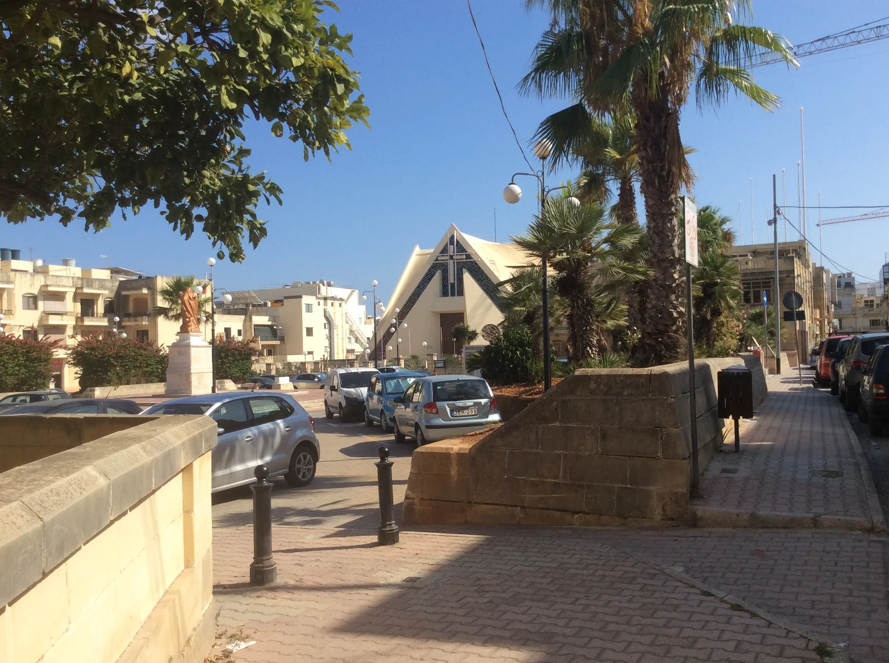

The present church belongs to a longer parish sequence. It does not prove that a listing sits beside the church or on Triq Hompesch.

IL-FGURA · MALTAModern parish.
Modern parish.
Connected streets.
Il-Fgura has its own civic story inside a continuous south-eastern urban area. Żabbar, Paola, Tarxien and the Cottonera localities remain separate places, even where their streets meet.
READ THE LOCALITY PRECISELY
Start with Fgura, then locate the street.
The modern parish and local council establish a civic centre. The locality's edges meet neighbouring towns and the Cottonera Lines, so an exact address still determines everyday access, street conditions and useful transport.
Żabbar, Paola, Tarxien and the Cottonera localities must not be folded into a generic Fgura description.
The broad map centre helps position the town. It says nothing about a listing's street, view, parking or walking time.
A published route is not a property journey.
Malta Public Transport currently publishes Route 95 from Valletta to Fgura and back. Use the live operator page for departures, diversions and connections rather than relying on frozen brochure times.
The exact street answers the practical questions.
Confirm evening traffic, parking arrangement, pavement continuity, entrance access, the nearest useful stop and the actual route to regular errands. A Fgura label or locality centroid cannot answer them.
EVERYDAY ORIENTATION
Use durable public anchors, then verify locally.
The council, health service and live transport page provide a responsible first check. Shops, operators and street-level convenience still need current verification.
Fgura Local Council
Use the official council site for current notices and local administration rather than freezing service details into a brochure.
Paola catchment
Primary HealthCare currently places Fgura in the Paola Health Centre catchment and lists a community clinic in Fgura. Check its live pages for services, eligibility and appointments.
Route 95
This establishes a current operator corridor only. It does not guarantee a frequency, connection, nearest stop or property-specific journey time.
Verify the exact street
No durable grocery anchor was established in this research pass. Check current shops and the actual walking environment from the property.
ACTIVITIES, THROUGH FGURA'S OWN STORY
Read a modern town through its parish layers.
Fgura's most legible public story is not an imported temple itinerary. The Archdiocese records a sequence from the earlier chapel to the Carmelite parish and the present church on Triq Hompesch; each stop belongs to a different moment and current access must be checked.
Present parish church
The current church was blessed in 1988 and consecrated in 1990. See it as Fgura's own late-twentieth-century landmark, not as evidence that every local address shares its immediate setting.
Chapel, Carmelite church, parish
The official account traces a small chapel from 1798, its rebuilding in 1844, a Carmelite church built in 1950 and parish status in 1965. This is history to read, not a plotted walking route.
Civic centre and joined-up streets
Spend time comparing the modern centre with the continuous urban edge. Paola, Tarxien, Żabbar and the Cottonera localities remain distinct even when the built fabric feels unbroken.
Check parish and council notices
Services, community events and access change. Use the live parish and council pages before planning a visit rather than treating a neighbourhood edition as a timetable.
FOOD, WITHOUT RANKINGS
Three licensed records, each with a real address.
The Malta Tourism Authority's current Fgura filter returned three restaurant records when rechecked on 27 October 2026. A licence record establishes a name and registered address only; it does not establish quality, cuisine, price, availability or today's opening hours.
Antalya Kebab Fgura
The register places Antalya Kebab Fgura at 43 Triq Hompesch. Confirm the current menu, trading status and service directly with the operator.
Eda Kebab & Pizzeria House
The record gives 340 Triq Ħaż-Żabbar. The address is useful for orientation, but it is not a recommendation or a promise of an easy route from a property.
Karavan Restaurant
The register places Karavan Restaurant on Vjal Kottoner. Recheck whether it is trading and whether its current offer suits the occasion before setting out.
Open the broad locality overview only when you need it.
The map frames Il-Fgura and surrounding place labels for orientation. It deliberately draws no boundary, route, distance, travel time or listing location and loads from OpenStreetMap only after your click.
Malta Address Registrar · Fgura Local Council · Archdiocese parish page · Paola Health Centre · Malta community clinics · MPT Route 95 · MTA restaurant register. Volatile service details require a fresh check.
Neighbourhood edition. No ranking, fixed opening hour, property-specific distance, guaranteed view, parking claim, accessibility promise, route or journey time is implied.
Continue with the Paola (Raħal Ġdid), Ħaż-Żabbar, Kalkara and Marsa editions, or return to all neighbourhoods.